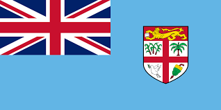
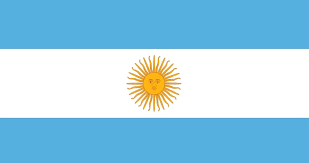

| Europa | Asia | Africa | Oseania | America |
|---|---|---|---|---|
| Alemania | Corea | Nigeria | Australia | E.U. |
| Francia | Japon | Kenia | Nueva Zelanda | Mexico |
| Italia | Tailandia | Madagascar | Fiyi | Brasil. |
| España | China | Angola | Samoa | Argentina |
| Suiza | India | Marruecos | Kirabati | Colombia |
Alemania es considerada como uno de los países más desarrollados del mundo tiene también uno de los niveles de vidas más altos
 Alemania
Alemania
Francia se destaca por su producción de vinos, sus paisajes, cultura e historia, que hacen de este país uno de los más visitados del mundo.
Franciatalia es reconocida por su arte, su cultura y sus numerosísimos monumentos, entre ellos la torre de Pisa y el Coliseo romano; así como por su gastronomía
 Italia
Italia
Muy conocida por la música y el baile flamencos, las corridas de toros, las playas fantásticas y muchísimo sol,
 España
España
Más allá de sus conocidos quesos y de la calidad de sus chocolates, no hay algo que se asocie más con Suiza que su singular orología.
 Suiza
Suiza
Arquitectura futurista por todas partes, increíbles centros comerciales con las últimas tendencias de moda, salas de karaoke (noraebang) y una asombrosa cultura ancestral.
CoreaSu capital es Tokio, que con más de 37 millones de habitantes es la ciudad más poblada del mundo.
 Japon
Japon
El denominado país de las sonrisas es uno de los países más hospitalarios y cálidos de todo el Sudeste Asiático
 Tailandia
Tailandia
La religión principal y más practicada en China es el budismo, la cual es originaria de la India.
 China
China
La India es el lugar de origen de cuatro grandes religiones mundiales: el hinduismo, el jainismo, el budismo y el sikhismo
 India
India
Nigeria es un Estado multinacional, habitado por 250 grupos étnicos, de los cuales los tres más grandes son los hausa y fulani, los yoruba y los igbo
 Nigeria
Nigeria
Kenia posee la mayor economía de África del Este, una población educada, un sector privado dinámico y recursos naturales
KeniaLa isla más grande del Océano Índico, Madagascar es famosa por su fauna y biodiversidad única
 Madagascar
Madagascar
El 70% de la población en Angola vive en zonas rurales y en condición de pobreza. 50 años de guerra que siguen dejando consecuencias en el país.
AngolaEl Reino de Marruecos, en el norte de África, es un país islámico escogido por muchos viajeros debido a sus paisajes naturales e importantes manifestaciones
MarruecosAustralia tiene un alto nivel de vida respaldado por una fuerza laboral con educación y un nivel avanzado en cuanto a innovación.
 Australia
Australia
Nueva Zelanda es uno de los destinos más deseables del mundo para migrar
 Nueva Zelanda
Nueva Zelanda
Fiyi, con una población de 924.610 personas, se encuentra en la posición 159 de la tabla de población, compuesta por 196 países y presenta una moderada densidad
 FiyiSamoa fue admitida en la ONU el 15 de diciembre de 1976
 Samoa
Samoa
Está integrada por un grupo de 33 atolones coralinos y la isla volcánica de Banaba diseminados en un área de más de tres millones de kilómetros cuadrados
KirabatiEl país es la principal fuerza capitalista del planeta, además de ser líder en la investigación científica y la innovación tecnológica
 Estados Unidos
Estados Unidos
México mantiene su estatus como un país amable, hospitalario, hermoso y con una rica historia y cultura, conocido en todo el mundo por su comida, música y arte
 Mexico
Mexico
El Brasil es una importante potencial agrícola e industrial, y la economía más fuerte de América Latina y el Caribe
 Brasil
Brasil
Argentina es un país líder en producción de alimentos, con industrias de gran escala, particularmente en agricultura y ganadería vacuna
 ArgentinaColombia tiene el número más grande de especies por unidad de área en el planeta
 Colombia
Colombia